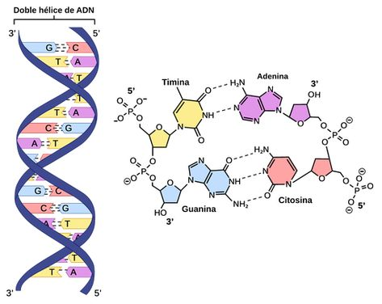
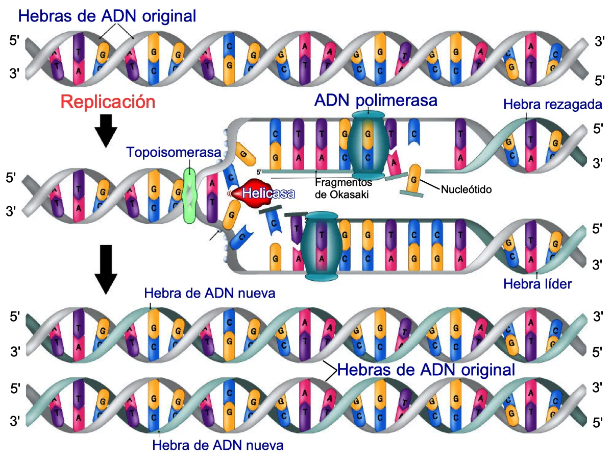

Si hay una herramienta que revolucionó la investigación criminal en el siglo XX, esa es el análisis del Ácido Desoxirribonucleico, mejor conocido como ADN. La genética forense es la especialidad que utiliza los perfiles de ADN para identificar de forma casi infalible a sospechosos y víctimas de delitos.


A diferencia de otros indicios que pueden ser alterados o confundidos, el ADN es único para cada ser humano (con la única excepción de los gemelos idénticos). Una mínima gota de saliva en el borde de un vaso, un cabello con raíz o una mancha de sangre invisible a simple vista pueden contener suficiente información genética para señalar al culpable.
El proceso moderno se basa en la Reacción en Cadena de la Polimerasa (PCR), una técnica de laboratorio que permite "fotocopiar" millones de veces fragmentos específicos de ADN muy pequeños o dañados. Una vez amplificado, el perfil se compara con bases de datos nacionales o internacionales.
Gracias a esta tecnología, los sistemas judiciales no solo logran condenar a criminales, sino que han liberado a cientos de personas inocentes sentenciadas erróneamente antes del descubrimiento de esta ciencia.